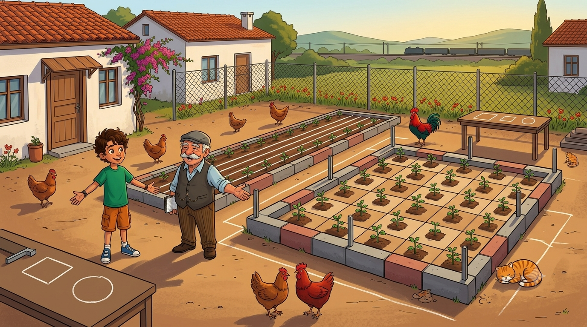

Aynı 24 metre çitle upuzun bir koridor da yapılır, kocaman bir kare bahçe de! Çevre ile alanın şaşırtıcı ilişkisi bu ünitede.

Aynı çitle koridor da olur, kocaman kare bahçe de! Çevre, alan ve büyük bahçe sırrı.